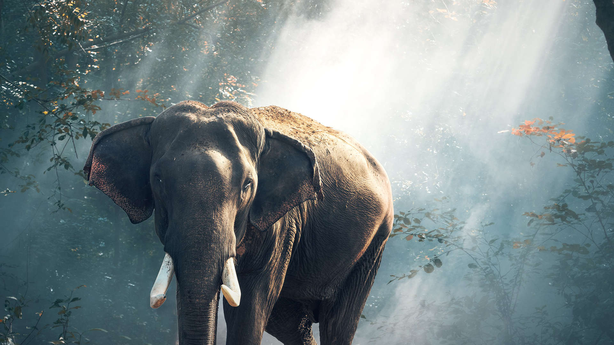

Click here for more information about the lions
They are often called house cats when kept as indoor pets or simply cats when there is no need to distinguish them from other felids and felines. They are often valued by humans for companionship.
There are more than seventy cat breeds recognized by various cat registries..
Cats were venerated in ancient Egypt, but there may have been instances of domestication as early as the Neolithic from around 9,500 years ago (7500 BC). Did you know that, The felids are a rapidly evolving family of mammals that includes:
Media
The lion is a muscular, deep-chested cat with a short, rounded head, a reduced neck and round ears
Lions spend much of their time resting, and are inactive for about 20 hours per day.
This is a Tital |
Another TitalMy name's Mubarak Im a web development student at developers institute |